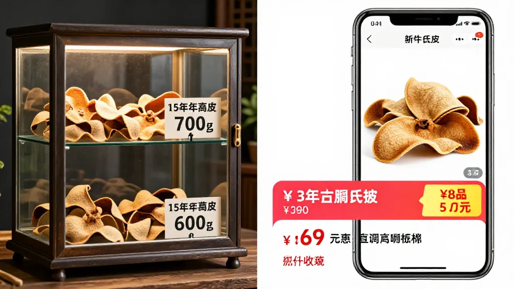
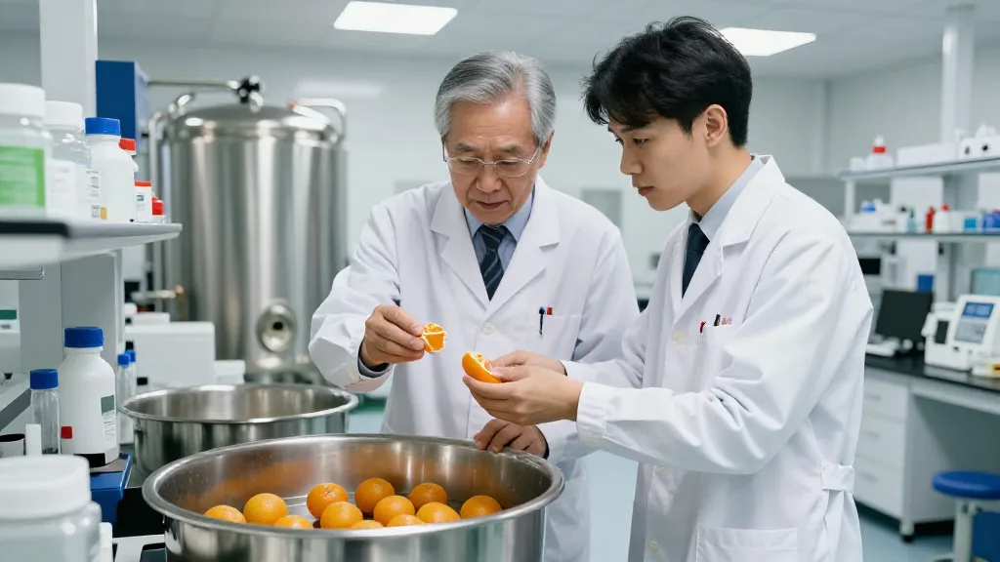

一、央視再揭陳皮造假黑幕：20倍暴利下的「工藝皮」真相
本週最具衝擊力的新聞，莫過於央視財經《財經調查》欄目的最新曝光。
欄目組接到群眾舉報後深入調查，發現陳皮市場存在系統性造假：成本僅70至75元一斤的廣西「工藝皮」，經速成加工、虛標年份、冒充產地後，貼上「地理標誌」標籤，搖身變為「正宗新會老陳皮」，單價可衝高至千元以上。業內人士透露，有烘坊一次出6000斤「工藝皮」，一個月陳化出的果皮效果即可「等同於三年」。利潤最高可達成本的二十倍以上。
消息一出，行業震動。新會區官方隨即回應，強調「以零容忍態度打擊造假售假行為」，並於僑光北路組織集中銷毀行動，11噸假冒及不合格陳皮產品被現場無害化銷毀，江門市人大代表、政協委員及媒體全程監督。
「造假行為傷害的不只是消費者，更是成個新會幾代人的心血。」陳董在銷毀行動現場說，「這次央視曝光，有助於加速行業凈化，讓真正做事的企業有出頭之日。」
二、柑肉變廢為寶：新寶堂與五邑大學聯手撬動70億產值
與造假新聞形成鮮明對比的，是新會陳皮產業在副產品開發上的最新突破。
新寶堂陳皮有限公司已與五邑大學達成產學研合作，攜手攻關「新會柑肉綜合利用技術」。根據合作協議，雙方力求在柑肉轉化為農業級有機肥和食品級酵素產品方面取得突破性進展，項目已入選江門市「大健康產業集群」重點名單。
陳董算了一筆賬：按新會柑種植規模7萬畝、每畝年產柑肉2噸計算，每年約14萬噸柑肉在新會區內被廢棄；若加上周邊地區集中到新會中轉加工的柑肉，全年廢棄量高達約25萬噸。項目總投資3.8億元，廠房佔地8.3萬平方米，酵素產品有望今年投產，未來將以獨立子品牌形式嵌入「高科技+養生文化+旅遊」的陳皮全產業鏈，實現「以皮帶肉，以肉養皮」的產業閉環，預期產值高達70億元。
三、科技賦能再下一城：五邑大學陳皮學院正式揭牌
新會陳皮產業的科技含量正在快速提升。
今年3月18日，五邑大學陳皮學院正式揭牌，這是國內首個由高校聯合地方政府的陳皮專門研究機構。學院由五邑大學、新會區政府及新會陳皮行業協會共建，聚焦產業關鍵技術難題：陳皮年份鑒定、無損檢測、活性成分提取等。
與此同時，新會陳皮數據資產已於今年3月在深圳數據交易所正式掛牌上市。這標誌著新會陳皮從「地理標誌」正式邁入「數據資產」時代。行業提出的「六真標準」——真源頭、真產地、真年份、真品種、真生態、真陳化——正以技術手段回應「年份虛標、產地冒充」等行业痛點。
「溯源體系與數據資產的建立，或將成為新會陳皮應對信任危機的最有力武器。」黃副區在陳皮學院揭牌儀式上表示，「科技賦能正從實驗室走向產業端。」
四、市場價格持續分化：百元與萬元之間的鴻溝
本週價格數據顯示，新會陳皮市場價格體系依然呈現巨大的結構性落差。
高端新會陳皮（八年陳以上）報價維持在128至145元/斤區間，高年份產品成交活躍度持續提升。2025年底，正宗新會產7年陳皮批發價已達1800至3500元/斤，零售價格普遍在2500至5000元以上。行業預判，2026年7年陳零售價格中樞將上移至3000至6000元/斤。

更值得關注的是價格層級背後隱藏的結構性問題。行業調研數據顯示，市場上3至5年陳皮電商低價產品售價約30至200元/斤；10年以上高端產品過度依賴品牌溢價；15年以上收藏級陳皮真假難辨。82%的消費者無法辨別陳皮年份，75%分不清產地差異。
「市場兩極分化正在加劇。」滢滢姐在直播間說，「普通消費者選擇3至5年陳皮時，應重點關注溯源體系完善的品牌產品，警惕價格嚴重偏離市場均值的產品。」
五、健康研究成果頻出：陳皮的現代醫學價值持續被驗證
學術層面，陳皮的健康價值研究在近期持續取得新進展。
《基於多組學分析探討陳皮改善膝骨關節炎滑膜纖維化的作用機制》詳細闡述了陳皮活性成分通過PTGS2-RELA-HMGCR-TNF軸調控滑膜成纖維細胞脂質代謝重編程的作用路徑，為陳皮在骨關節保健領域的應用提供了分子層面的機制支撐。
英國皇家化學學會發表了關於廣陳皮功能成分的系統綜述，指出陳皮含有豐富多糖、生物鹼、類胡蘿蔔素、萜類和酚類化合物，具有抗氧化、抗炎、調節腸道菌群等多重生物活性。

「陳皮的藥食同源屬性正獲得更多現代醫學證據支持，但消費者應理性看待功效宣傳。」滢滢姐說，「陳皮並非『萬能藥』，其健康價值需建立在長期適量使用的基礎上。」
危機倒逼進化，信任比黃金更珍貴。想系統瞭解陳皮從選果到陳化的全流程，加滢滢微信；每天早上 7 點到中午，來滢滢直播間看看真正的曬皮場；想學鑑別，看看新會陳皮火眼金睛鑑別與收藏之道。